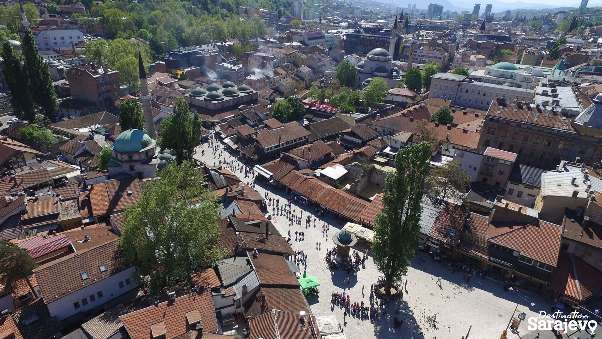
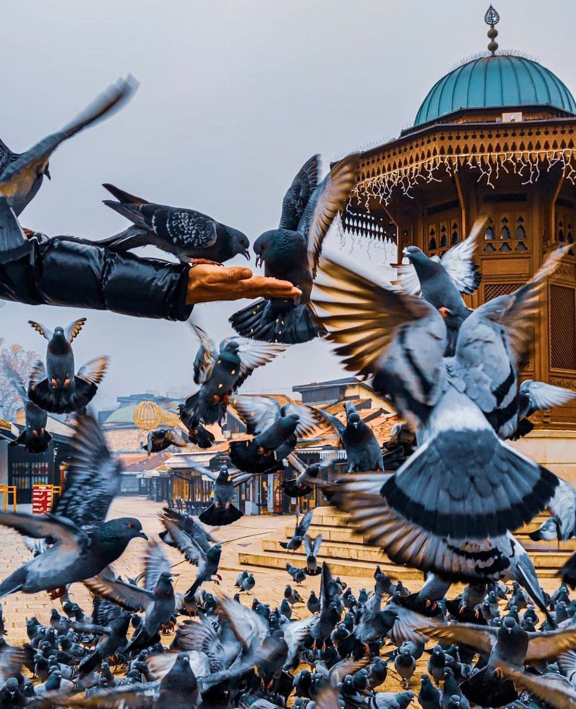

Baščaršija je stara sarajevska čaršija, te historijsko i kulturno središte grada. Baščaršija je nastala godine 1462. kada je Isa-beg Ishaković izgradio han, a pored njega brojne trgovačke objekte. Riječ Baščaršija potječe od riječi "baš", koja na turskom znači "glavna", tako da Baščaršija znači "glavna čaršija". Na Baščaršiji se nalazi nekoliko važnih povijesnih objekata, poput Sebilja, Gazi Husrev-begove džamije, Gazi Husrev-begovovog bezistana, Sahat kule… Gazi Husrev- beg je podigao svoju džamiju 1530. Godine, a u narednim godinama, on podiže medresu, biblioteku, Gazi Husrev- begov hamam, Gazi Husrev- begov bezistan, Morića han, Sahat kulu, te niz drugih obejakta koji su i dan dans jedni od glavnih obilježja Baščaršije.
Baščaršija je svoj najveći uspon dostigla u drugoj polovini 16. stoljeća kada je bila ekonomsko jezgro Sarajeva, ali i najveći trgovački centar središnjeg Balkana. Postojalo je 80 raznih vrsta zanata, organizovanih u jake cehovske organizacije. Čaršija je bila podjeljena po ovim zanatima tako da bi u svakoj ulici bili trgovački objekti za jedan ili više srodnih zanata (npr. ulice Kovači, Čurčiluk, Kazandžiluk, Sarači...).
U ova doba izgrađen je čitav niz trgovačkih objekata, poput bezistana, hanova... Sarajevo je bio važan centar trgovine na Balkanu i imao je tri bezistana (danas još uvijek postoje Gazi Husrev-begov bezistan i Brusa bezistan). Tada su na Bašćaršiji postojale čak i kolonije Mlečana i Dubrovničana. Baščaršija je u to doba imala otprilike 12.000 trgovačkih i zanatskih trgovina.
Zlatno doba Baščaršije naprasno je prekinuto kada je u oktobru 1697. vojska habsburškog princa Eugena Savojskog ušla u Sarajevo, te spalila veći dio grada. Čaršija je potom obnovljena, ali s austrougarskom okupacijom 1878. godine, strani arhitekti su htjeli Sarajevo pretvoriti u moderni europski grad. Nažalost dolazi ponovno do velikog požara koji je uništio stari grad osim dijela koji je i dan danas tu. Tako nastaje današnja poznata granica između Baščaršije i ulice Ferhadije, to mjesto na kojem se dodiruju Istok i Zapad. Nakon 1945. godine, novi gradski narodni odbor je donio odluku da se čaršija postepeno ruši, smatrajući da stari trgovački centar nema ulogu u modernom gradu. Srećom, to se nije desilo, a u sklopu priprema za organizaciju Olimpijade 1984. godine Baščaršija je obnovljena i tada započinje njen drugi život.
Baščaršija je ostala sačuvan, te onda danas predstavlja glavnu turističku atrakciju grada Sarajeva. Zubu vremena odoljeli su i neki od baščaršijskih tradicionalnih zanata, pa su danas upravo autentični proizvodi sarajevskih zanatlija najpopularniji suveniri koje posjetitelji ponesu sa sobom iz Sarajeva. Baščaršija, u čijim okvirima se nalaze Stara pravoslavna crkva, Gazi Husrev-begova džamija, medresa i biblioteka, Sahat kula, Stari jevrejski hram, Brusa i Gazi-Husrev begov bezistan, Vijećnica i brojne druge znamenitosti je spomenik pod zaštitom države, kulturno-historijsko središte Sarajeva.
Sebilj
Od 1754. Baščaršijski trg krasi Sebilj, javna česma i važan povijesni objekt na Baščaršiji. Prvobitni Sebilj se nalazio nešto niže od današnjeg, ali je 1852. godine izgorio u požaru, a ovaj današnji izgrađen je 1913. godine, po nacrtu češkog arhitekte Aleksandra Witteka. U Sarajevu je u osmanskom razdoblju bilo više sebilja, ali u požaru 1697. godine uništeni su svi sarajevski sebilji, osim ovoga koji je ostao do dan dnas. Također, ovaj dio Baščaršije se također često naziva i Trg golubova jer pored Sebilja ne možete proći, a da ne vidite golubove. Sama riječ Sebilj je arapska riječ u značenju "zgrada na putu u kojoj ima vode", fontana posebnog oblika na trgovima, na kojoj je sebiljdžija zahvatao vodu iz korita i besplatno napajao žedne.
U multionacionalnom zajedničkom javnom umjetničkom projektu izgrađena je suvremena interpretacija javne fontane i znamenosti u stvarnoj veličini u Birminghamu, koristeći tradicionalni dizajn i zanatske tehnike izrade u kombinaciji s modernom digitalnom tehnologijom. Također, postoji replika Sarajevskog sebilja u Beogradu, koju je grad Sarajevo poklonio 1989. godine. Replika Sarajevskog sebilja se nalazi i u St. Louisu, koja je dar bosansko-hercegovačke zajednice gradu St. Louisu za njegov 250. Rođendan. Također, replika Sarajevskog sebilja postoji i u Novom Pazaru, koju je kao dar poklonilo Sarajevo.
Gazi Husrev-begov bezistan
Gazi Husrev-begov bezistan je jedan od očuvanih bezistana u Sarajevu, koji i danas služi svojoj namjeni-trgovini. Bezistan je dio zadužbine Gazi Husrev-bega. Pravokutnog je oblika s ulazima, koji omeđuju 109 m dugu ulicu u kojoj su smještene male trgovine. Duž bezistana paralelno se pruža Gazi Husrev-begova (Zlatarska) ulica. Svojim izgledom Gazi Husrev-begov bezistan podsjeća na Kapali čaršiju i bezistane u Istanbulu ili souk (trgovačka ulica u arapskim zemljama) u gradovima na istoku.
Sahat-kula
Sarajevska sahat-kula se nalazi u blizini Gazi Husrev-begove džamije i jedna je od najvećih u Bosni i Hercegovini. Sagrađena je u 17. vijeku, a njezin graditelj je bio Gazi Husrev-beg. Ona je kao i Sebilj bila spaljena pod naletom Eugena Savojskog. Za vrijeme austrougarske, Sahat kula je bila obnovljena, te je dograđen gornji dio objekta, a sat su donijela dva sarajevska trgovca iz Londona, jer je stari, turski sat, koji je do tada bio na ovoj kuli, dotrajao. Godine 1967. na satu su pozlaćeni kazaljke i brojevi na sva četiri brojčanika.
 Kula ima 76 drvenih stepenika, poredanih u kvadratnom nizu, po kojima se penje muvekit jednom sedmično da podesi vrijeme. Sat se mora podešavati, jer pokazuje vrijeme pomoću lunarnog sata. Pretpostavlja se da je jedini u Evropi koji pokazuje vrijeme po lunarnom kalendaru. Ovaj sat ponoć pokazuje tačno u momentu zalaska sunca u Sarajevu. U dvorištu Begove džamije postojala je muvekithana, u kojoj se na osnovu preciznih mjerenja i posude s vodom određivalo tačno vrijeme namaza. Kada u toku islamskog svetog mjeseca posta ramazana sat na kuli otkuca 24 sata, vrijeme je iftaru.
Kula ima 76 drvenih stepenika, poredanih u kvadratnom nizu, po kojima se penje muvekit jednom sedmično da podesi vrijeme. Sat se mora podešavati, jer pokazuje vrijeme pomoću lunarnog sata. Pretpostavlja se da je jedini u Evropi koji pokazuje vrijeme po lunarnom kalendaru. Ovaj sat ponoć pokazuje tačno u momentu zalaska sunca u Sarajevu. U dvorištu Begove džamije postojala je muvekithana, u kojoj se na osnovu preciznih mjerenja i posude s vodom određivalo tačno vrijeme namaza. Kada u toku islamskog svetog mjeseca posta ramazana sat na kuli otkuca 24 sata, vrijeme je iftaru.
Ulica Sarači
Ulica Sarači najduža je ulica na Baščaršiji, te se pruža pravcem zapad – istok, vodi od Gazi Husrev-begove ulice i popularne slastičarna Slatko ćoše do ulice Baščaršija. Ulica nosi ime po saračima, zanatlijama koje su izrađivale različite predmete od kože, većinom konjsku opremu. Ulica Sarači postojala je još 1462. godine, o čemu postoji pisani trag Isa-bega Ishakovića iz te godine. Ipak, status čaršije Sarači su dobili tek za uprave Gazi Husrev-bega, koji je 1531. godine u toj ulici izgradio 60 trgovačkih objekata.
Ulica Kazandžiluk
Ulica Kazandžiluk započinje uz istočni kraj ulice Baščaršija (Baščaršijskog trga), i vodi stotinjak koraka dalje na istok, te onda zakreće na jug, gdje se spaja sa ulicom Bravadžiluk. Kazandžiluk je jedna od najstarijih i najpoznatijih sarajevskih ulica, koja je nekada bila dio mnogo šire kazandžijske čaršije. Sarajevska kazandžijska čaršija podignuta je tokom prve polovine 16. stoljeća za vrijeme Osmanske vladavine u Sarajevu, u vrijeme formiranja zanatsko-trgovačkog jezgra Sarajeva.
Ime je Kazandžiluk dobio po majstorima kazandžijama, koji su sprva izrađivali kazane za vojsku, a kasnije i drugo posuđe i predmete od bakra za svakodnevnu upotrebu (ibrike, đugume, džezve, demirlije, table...). U “zlatno doba” osmanskog Sarajeva, kazandžije su izrađivale oko stotinjak različitih predmeta.
Danas je asortiman sarajevskih kazandžija umnogome reduciran, ali u Kazandžiluku se mogu i dalje naći ne samo predmeti koji su obilježili period Osmanlija u Bosi i Hercegovini, već i brojni drugi predmeti koji su upečatljiva uspomena na druge historijske periode, te tako ova ulica svojom posebnošću i dalje privlači veliku pažnju, posebno turista kojima ova ulica vrvi u gotovo svako doba godine.
Ulica Kovači
Kako je Baščaršija za vladavine Osmanlija bila trgovačko i zanatsko središte Sarajeva, pretpostavlja se da je ulica Kovači dobila ime po kovačima, koji su se bavili obradom i kovanjem gvožđa. Kada su prije 200-tinjak godina požari poharali Baščaršiju, neki majstori – kazandžije su iz Kazandžiluka radnje preselili na Kovače, kako nekom od njih vatra ne bi izmakla kontroli i proširila se na ostatak baščaršijskih trgovina, sagrađenih od drveta.
Danas su Kovači jedna od najživopisnijih starogradskih ulica, čijem doživljaju doprinosi hodanje kaldrmom, čekićanje kazandžija u njihovim trgovinama i nekoliko šarmantnih ugostiteljskih objekata. Poželite li nakon posjete Kovačima uživati u prelijepom pogledu na Sarajevo, samo produžite uzbrdo, prema utvrdama starog grada Vratnika – Žutoj i Bijeloj tabiji.
Jedno od najpopularnijih mjesta u kojima možete uživati u atmosferi ove ulice je turistima i Sarajlijama omiljena čajdžinica Džirlo, u kojoj će vam vlasnik Husein Džirlo pripremiti čaj iz Južne Afrike, Kine, Indije ili Turske i obasuti vas zanimljivim pričama i neodoljivim šarmom. Šarmu Kovača nije odolio ni australijski glumac bosanskog porijekla Reshad Strik, koji je sa suprugom, Sarajkom Sabinom, tamo otvorio kafanu i pržionicu kafe Ministry of Ćejf, gdje možete probati i kupiti neke od najboljih svjetskih vrsta kafe.